Transformer les données en informations exploitables
Passionné par l'analyse de données et la résolution de problèmes, j'aide les entreprises à prendre des décisions éclairées en transformant des données brutes en informations significatives.
De l'amélioration de la qualité à la stratégie fondée sur les données
Dans l'industrie de l'électronique automobile, j'ai mené des analyses de données approfondies et développé des visualisations claires qui ont amélioré l'efficacité des processus et la qualité des produits. Mon travail a joué un rôle clé dans l'affinement de la détection des anomalies et l'optimisation des flux de travail.
Élargir mes connaissances
Pour renforcer mes compétences, j'ai suivi un programme intensif de formation d'analyste de données, où j'ai approfondi mes connaissances en Business Intelligence, Machine Learning et Text Mining, tout en affinant mon expertise en SQL, Python et visualisation de données.
En quête de nouveaux défis
Je suis impatient d'appliquer mon expertise dans un environnement dynamique où la prise de décision fondée sur les données est essentielle. Je suis particulièrement intéressé par l'utilisation de l'analyse pour stimuler la performance de l'entreprise et l'excellence opérationnelle.
Dashboard perspicace présentant des analyses clés extraites des données brutes d'un centre d'appels
- Je l'ai conçu avec une mise en page douce et minimaliste et des couleurs pastel -
Rapport pour le service clients:
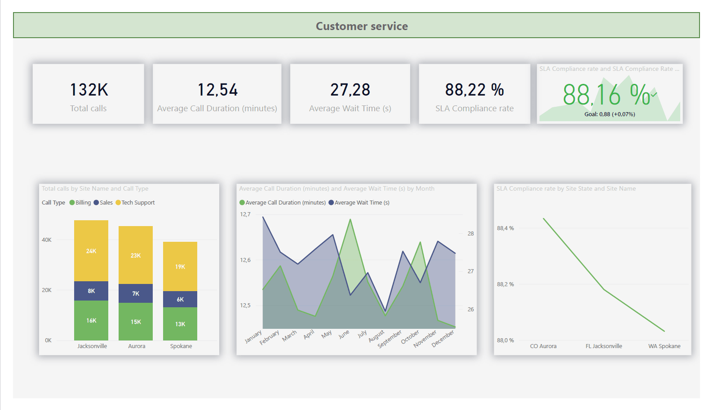
Rapport sur les performances globales:
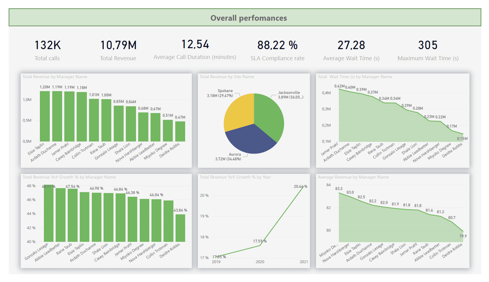
Rapport de performance des équipes:
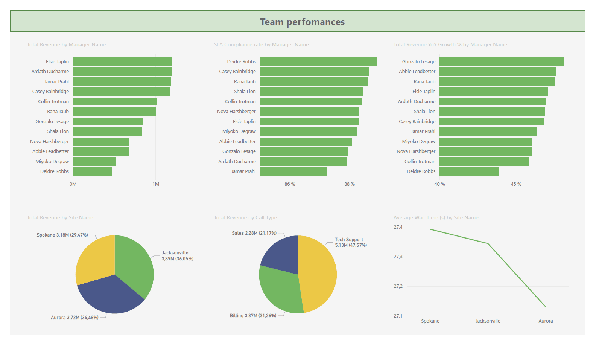
Rapport sur les recettes en un coup d'œil:
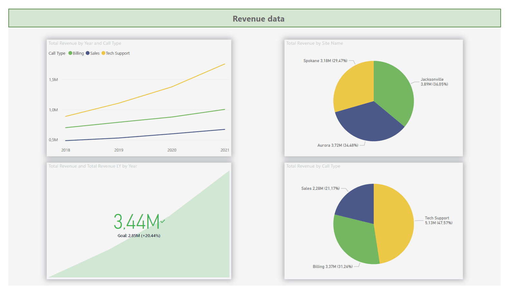
✨ E T L ✨
L'ensemble de données est construit autour de plusieurs fichiers Excel / CSV:
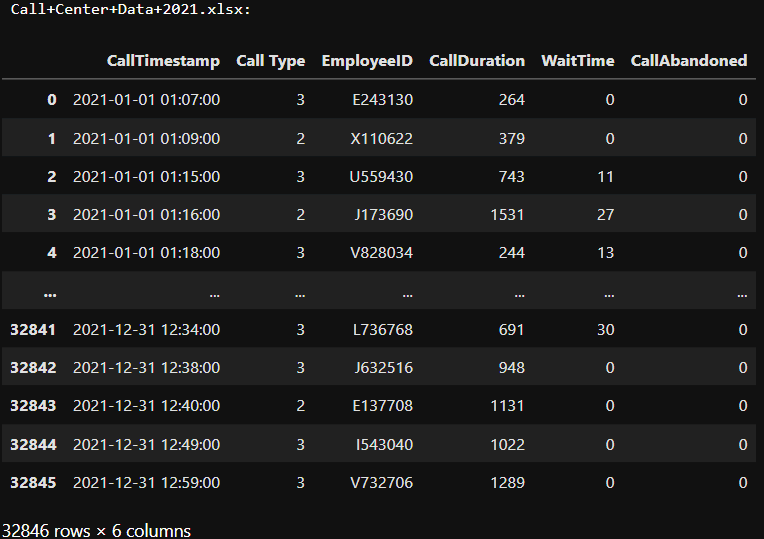
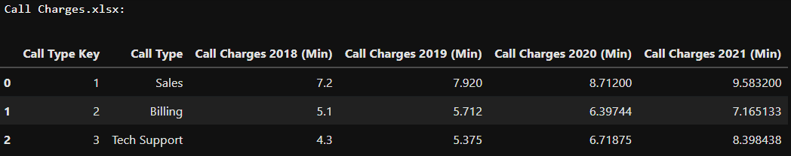.
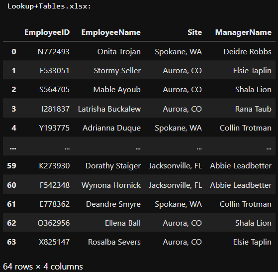
Après avoir extrait les données des fichiers sources à l'aide des connecteurs appropriés, elles sont traitées, filtrées, correctement formatées et normalisées. Pour une gestion efficace des big data, il est essentiel de structurer les tables selon un schéma en étoile efficace, avec la table des faits au centre, entourée de tables de dimensions.
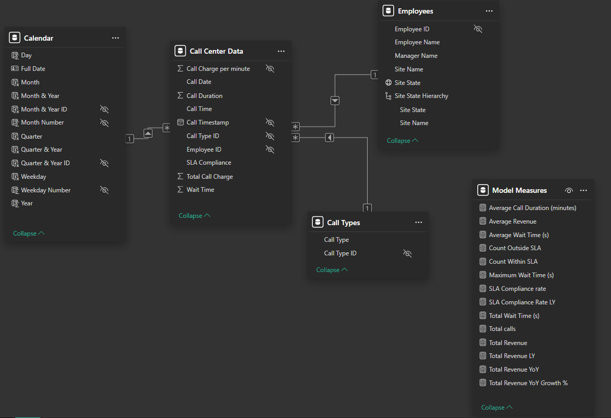
Application Streamlit
Une manière interactive et efficace de présenter un projet de données ⋙ des aperçus en direct et des visualisations dynamiques
Voici un très bon exemple d'application Streamlit.
Je l'ai créé pour la démonstration orale dans le cadre de mon projet d'étude de Data Analyst.
⬇️ 👁🗨 Je vous invite à y jeter un coup d'œil ! ⬇️
Dans le cadre d'un projet de science des données, j'ai développé une application Streamlit pour présenter notre flux de travail de bout en bout, de l'exploration des données aux prédictions d'apprentissage automatique. L'ensemble de données, provenant de Kaggle, contenait des attributs catégoriques tels que la plateforme, l'éditeur et l'année de sortie.
Principales caractéristiques et points forts techniques :
✅ Exploration et visualisation des données
‣ Présentation de l'ensemble de données avec des informations clés.
‣ Réalisation d'une analyse exploratoire des données (EDA) à l'aide de graphiques interactifs Plotly pour découvrir les tendances des ventes.
Enrichissement des données par le biais du web scraping.
‣ Récupération de plusieurs sites web pour compléter les valeurs manquantes et ajouter de nouvelles caractéristiques quantitatives.
‣ Cette amélioration a considérablement accru la précision de notre modèle d'apprentissage automatique.
✅ Mise en œuvre de l'apprentissage automatique
‣ Test de plusieurs modèles d'apprentissage automatique pour la prédiction des ventes.
‣ Application de l'encodage des caractéristiques et de la transformation des variables cibles pour une meilleure performance.
✅ Analyse des sentiments
‣ Analyse de données textuelles liées aux jeux vidéo pour extraire des informations précieuses des commentaires des joueurs.
Ce projet démontre mon expertise acquise en matière d'analyse de données, d'extraction de données, de web scraping, de feature engineering et de machine learning tout en tirant parti de Streamlit pour la création de rapports interactifs.
Menu latéral, images, dataframes / aperçu de tableaux. Possibilité de filtrer les données.
Texte enrichi avec le langage markdown.
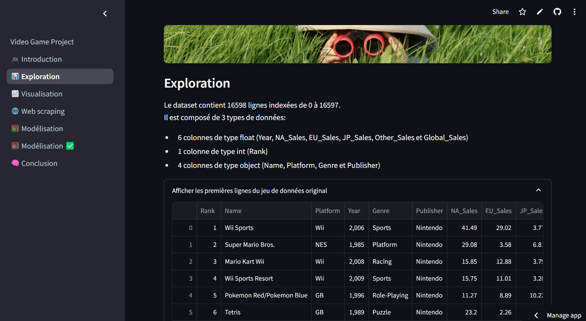
Rendu avancé de graphiques, comme avec Bokeh, Plotly, Matplotlib et plus encore !
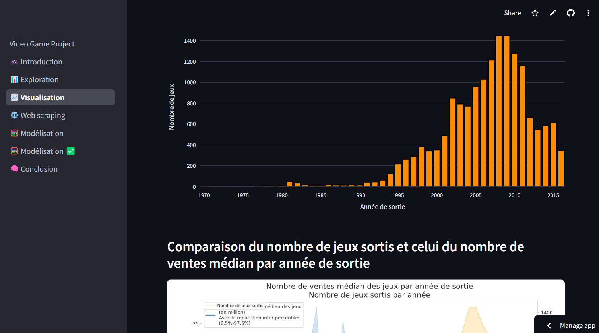
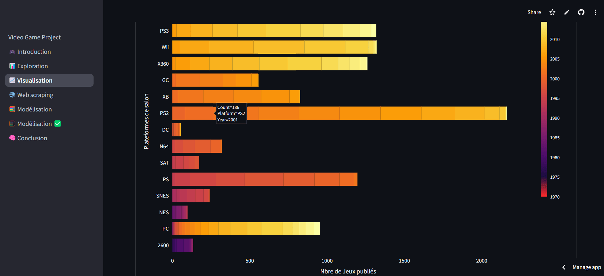
Plusieurs options de conteneurs : popover, dropdown...
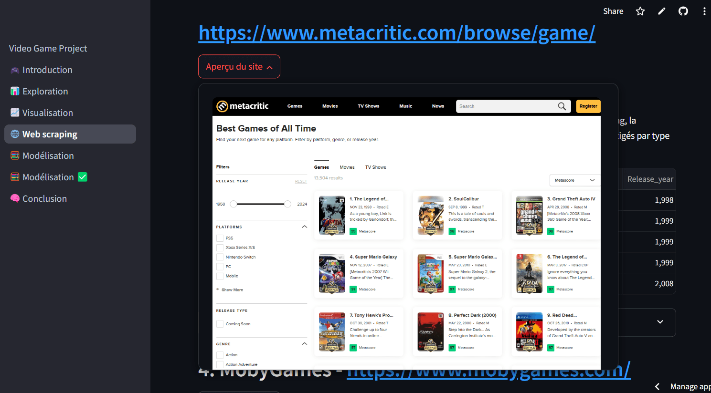
Options avec curseurs, mise à jour dynamique de graphique...
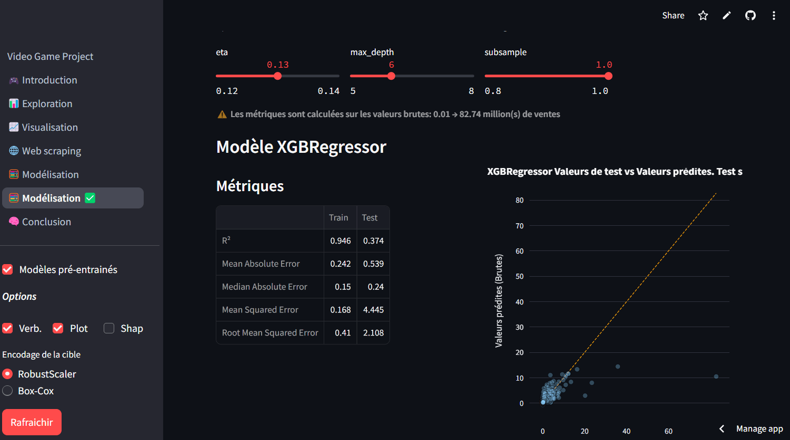
Intégration de code, travail avec des colonnes...
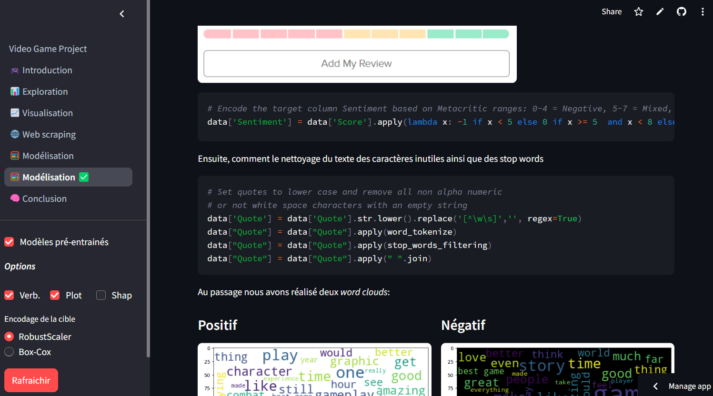
Options avec cases à cocher, boutons radio...
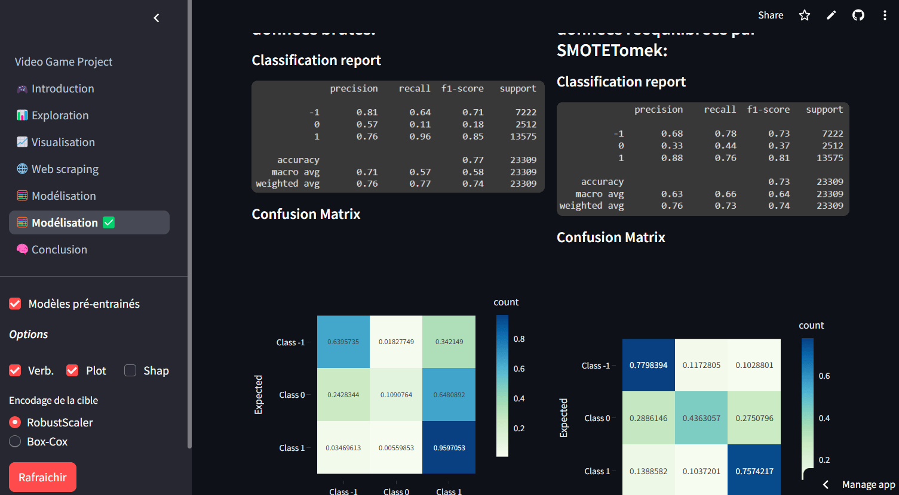
Dashboard Looker Studio
Un exemple dynamique et interactif de visualisation des données clés
L'ensemble de données source contient des données provenant d'une entreprise offrant un service de livraison et de stockage.
⬇️ 👁🗨 Jetez un coup d'œil ! ⬇️
Axe d'analyse
Vue d'ensemble des livraisons : nombre de livraisons par mois, dommages causés aux colis par jour de la semaine, certains indicateurs clés de performance.
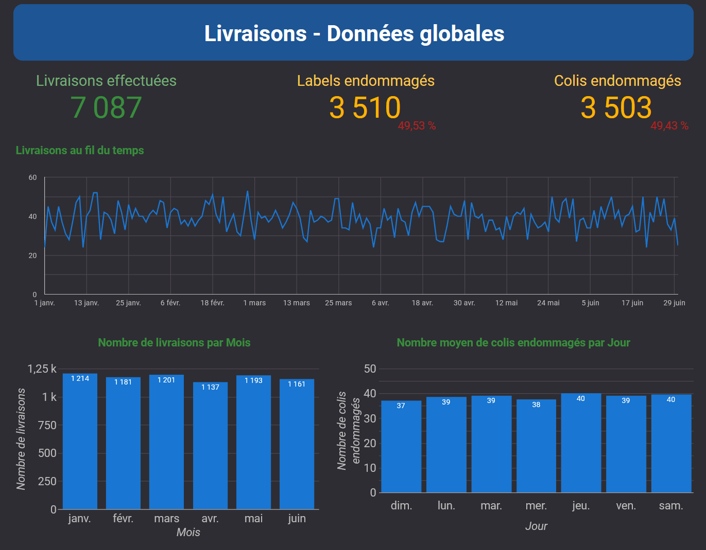
Aperçu des performances des magasins : pourcentage de colis scannés manuellement, temps moyen passé par camion dans chaque magasin, nombre de livraisons par entrepôt, nombre de livraisons par magasin.
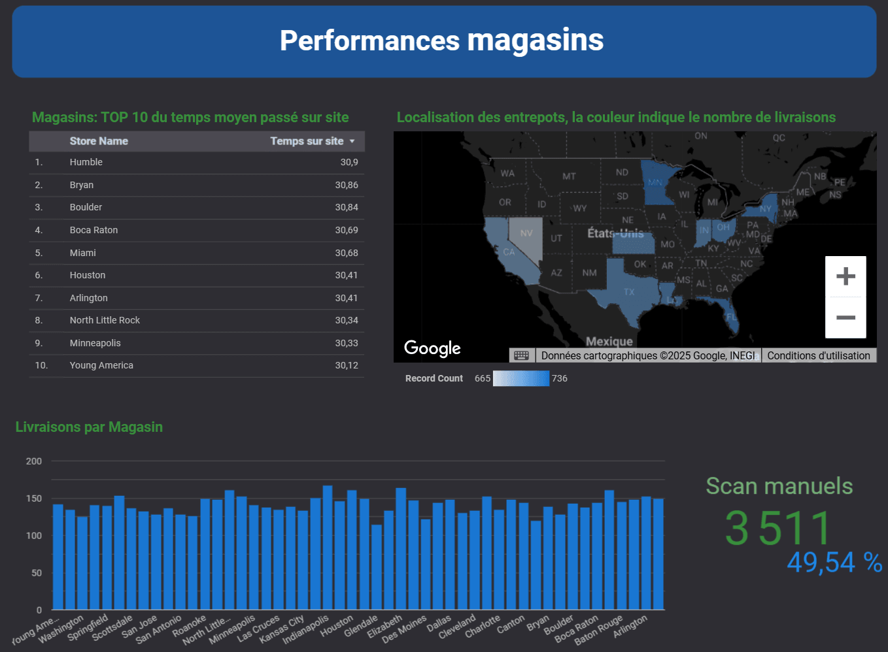
Web Scraping avancée
Extraire efficacement des données du web pour obtenir des informations et des analyses puissantes
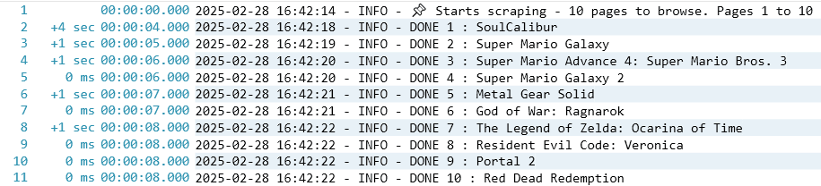
Au cours de mon projet d'étude de Data Analyst, j'ai amélioré les données fournies en complétant les valeurs manquantes et en ajoutant des attributs quantitatifs, obtenus grâce au web scraping, afin d'améliorer nos modèles d'apprentissage automatique.
Récemment, j'ai réexaminé ce travail et j'y ai apporté des améliorations significatives, améliorant considérablement l'efficacité, l'enregistrement et la fiabilité.
⬇️ 👁🗨 Jetez un coup d'œil ! ⬇️
Ce script a pour but de récupérer tous les jeux vidéo classés sur le site Metacritic.com (actuellement 13 589 jeux) en collectant des informations telles que:
Critic_positive_reviews: Nombre d'avis « positifs » reçus de la part de critiques très respectés
Critic_mixed_reviews: Nombre d'avis « mitigés » reçus de la part de critiques très respectés
Critic_negative_reviews: Nombre d'avis « négatifs » reçus de la part de critiques très respectés
User_score: Note moyenne attribuée par les utilisateurs finaux
User_positive_reviews: Nombre d'avis « positifs » reçus de la part des utilisateurs finaux
User_mixed_reviews: Nombre d'avis « mitigés » reçus de la part des utilisateurs finaux
User_negative_reviews: Nombre d'avis « négatifs » reçus de la part des utilisateurs finaux
Game_url: URL de la page du jeu
Ce script web scraping est bien optimisé, se concentrant sur l'efficacité, la robustesse et l'extensibilité.
⋙ Exécution asynchrone pour la performance:
☑ Utilise asyncio et aiohttp pour les requêtes HTTP non bloquantes, ce qui réduit considérablement les temps d'attente.
☑ Récupération des scores de la plateforme en parallèle avec asyncio, ce qui améliore l'efficacité.
⋙ Gestion avancée de la simultanéité:
☑ Implémente concurrent.futures.ThreadPoolExecutor pour traiter plusieurs tâches simultanément.
☑ Limite le nombre de threads simultanés (max_threads=5) pour optimiser la charge du système et du serveur.
⏫L'utilisation de pools de threads et de fonctions asynchrones a considérablement amélioré l'efficacité, réduisant le temps de scraping d'un facteur 5 au minimum.
⋙ Gestion robuste des erreurs:
☑ Met en œuvre un mécanisme de réessai (MAX_RETRIES) avec un backoff exponentiel pour gérer les défaillances du réseau.
☑ Détecte les interdictions (par exemple, captchas, HTTP 403) et enregistre les erreurs sans bloquer le script.
⋙ Mécanismes anti-détection:
☑ Utilise un User-Agent aléatoire (fake_useragent) et des référents dynamiques pour imiter les utilisateurs réels.
☑ Inclut des délais aléatoires optionnels pour éviter la détection des robots.
⋙ Optimisation du stockage et de l'exportation des données:
☑ Met en œuvre des mécanismes de verrouillage pour garantir l'intégrité des données.
☑ Enregistre périodiquement les données par lots afin d'éviter une surcharge de la mémoire.
☑ Fusionne et compresse automatiquement les fichiers CSV pour une gestion efficace du stockage.
Text / Data Mining
Découvrir des patterns cachés et des informations précieuses à partir de données non structurées
Dans le cadre de mon projet d'étude de Data Analyst, j'ai collecté, à l'aide du web scraping, les commentaires des utilisateurs pour chaque jeu/console de l'ensemble des données de base, en me concentrant sur les jeux ayant au moins 50 commentaires d'utilisateurs.
J'ai donné la priorité aux commentaires les plus anciens et limité la collecte à un maximum de 500 commentaires par jeu, ce qui a donné un fichier CSV de 390 Mo.
Voici un échantillon des données collectées:
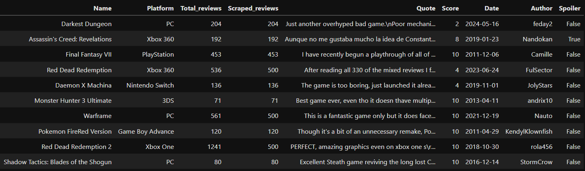
Regardez cet exemple Darkest Dugeon.
Chaque commentaire est associé à une note de 0 à 10. Metacritic classe ensuite chaque note comme positive, mitigée ou négative de cette façon:
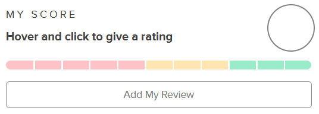
Les notes de 0 à 4 sont comptées comme négatives.
Les notes de 5 à 7 sont comptées comme mitigées.
Les notes de 8 à 10 sont comptées comme positives.
📋 Nous obtenons alors cette synthèse:
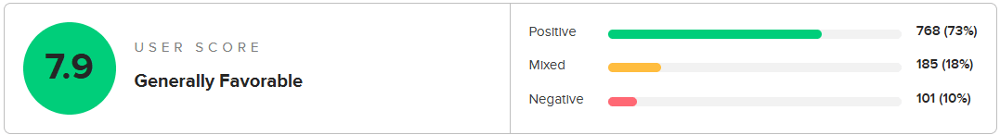
Notre objectif était de prédire l'étiquette de la catégorie (notre cible) associée à chaque commentaire d'utilisateur (la caractéristique).
⋙ Voici le pipeline technique:
Filtrez uniquement les commentaires anglais à l'aide du module Python langdetect.
Créez une nouvelle colonne nommée « Sentiment » en appliquant le filtre ci-dessus. Sentiment = -1 négatif, 0 pour mitigé, 1 pour positif.
Faire un peu de nettoyage : mettre les caractères en minuscules, supprimer les caractères parasites.
La tokenisation des mots puis le filtrage des mots vides sont effectués à l'aide des fonctions du module Python nltk.
Appliquer la lemmatization des mots.
Appliquer la méthode TF-IDF.
La distribution des étiquettes dans l'ensemble de données utilisé (132083 citations) n'étant pas équilibrée, j'ai appliqué une combinaison de techniques pour équilibrer les données. Plus précisément, j'ai utilisé SMOTETomek dans ce but.
Graphique de comptage de labels Données brutes
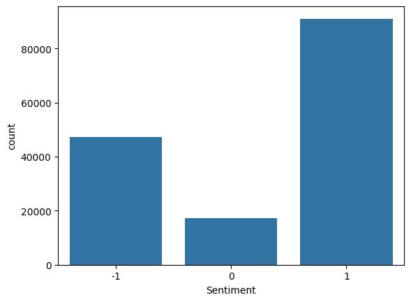
Graphique de comptage de labels Données suréchantillonnées
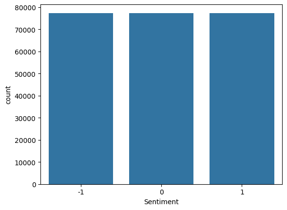
J'ai ensuite ajusté des modèles de classification Gradiant Boosting de la bibliothèque Python scikit-learn, avec et sans méthode de rééchantillonnage, et j'ai vérifié la différence dans les prédictions.
Matrice de confusion de la prédiction Données brutes
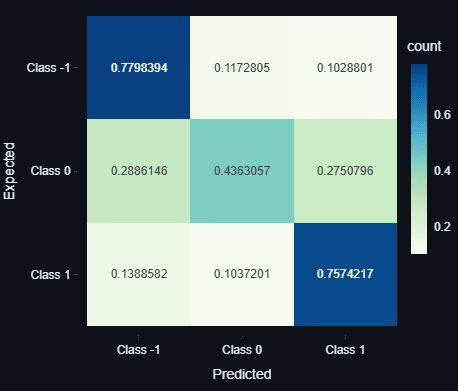
Matrice de confusion de la prédiction Données suréchantillonnées
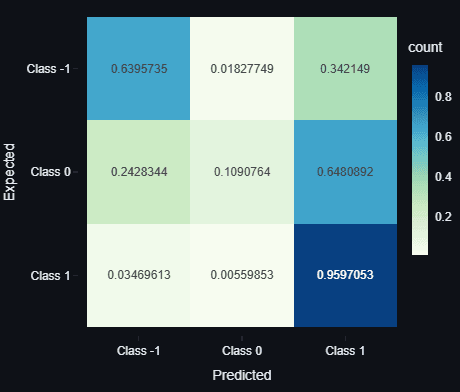
Nous pouvons clairement observer une amélioration des prédictions, en particulier pour les sentiments négatifs et mitigés, au prix d'une précision légèrement réduite pour les prédictions de sentiments positifs.
Nous avons finalement utilisé ces prédictions dans nos prédictions de ventes de jeux vidéo, en utilisant des caractéristiques d'entrée telles que:
Publisher
Year of release
Platform
Genre
Developer
Rate
Platform Type
User comments
Présentation Streamlit du projet complet
Machine Learning
Construire des modèles prédictifs et découvrir des informations fondées sur des données grâce à l'IA
Dans le cadre du programme de formation de Data Analyst de Datascientest, certains cours couvrent à la fois l'apprentissage automatique supervisé et non supervisé (supervised & unsupervised Machine Learning).
Le projet d'étude nous a permis d'appliquer nos connaissances à un cas réel. Mon projet s'est concentré sur la prévision des ventes de jeux vidéo basée sur des caractéristiques qualitatives, en utilisant des données provenant de Kaggle.
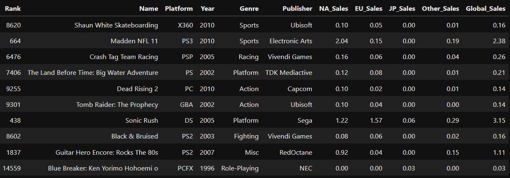
Les caractéristiques qualitatives des prédictions sont les suivantes:
Platform
Year
Genre
Publisher
La cible choisie est Global_Sales.
⋙ Après l'exploration et le nettoyage des données, et les premiers tests avec des modèles classiques, nous avons constaté que nous obtenions de meilleurs résultats lorsque la cible était traitée avec la transformation de Box-Cox. This transformation aims to make data more Gaussian-like.
Graphique quantile à quantile Données brutes
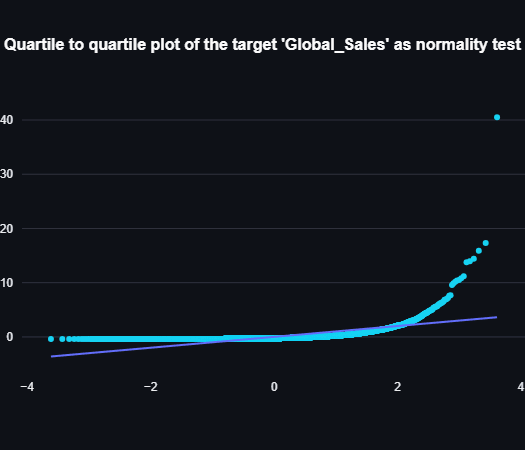
Graphique quantile à quantile Données transformées par la méthode Box-Cox
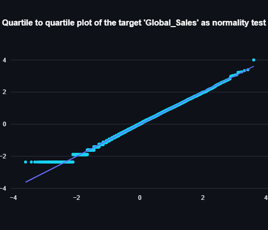
⋙ Nous avons préféré coder les caractéristiques qualitatives avec un Binary Encoder plutôt qu'avec un OneHotEncoder standard afin de minimiser les données générées.
⋙ Nous avons déterminé que le XGBoostRegressor donnait de bons résultats avec nos données, mais que des améliorations étaient encore possibles.
C'est pourquoi nous avons intégré des données scrapées dans notre ensemble de données, en incorporant des caractéristiques quantitatives telles que les scores des utilisateurs, le nombre d'avis positifs, mitigés et négatifs par jeu, ainsi que les scores des critiques et leur nombre respectif d'avis.
Cette amélioration permet d'accroître la précision des prédictions de 18 %, la faisant passer de 44 % à 62 %.
⬇️ 👁🗨 Jetez un coup d'œil à notre projet complet Streamlit demo ⬇️